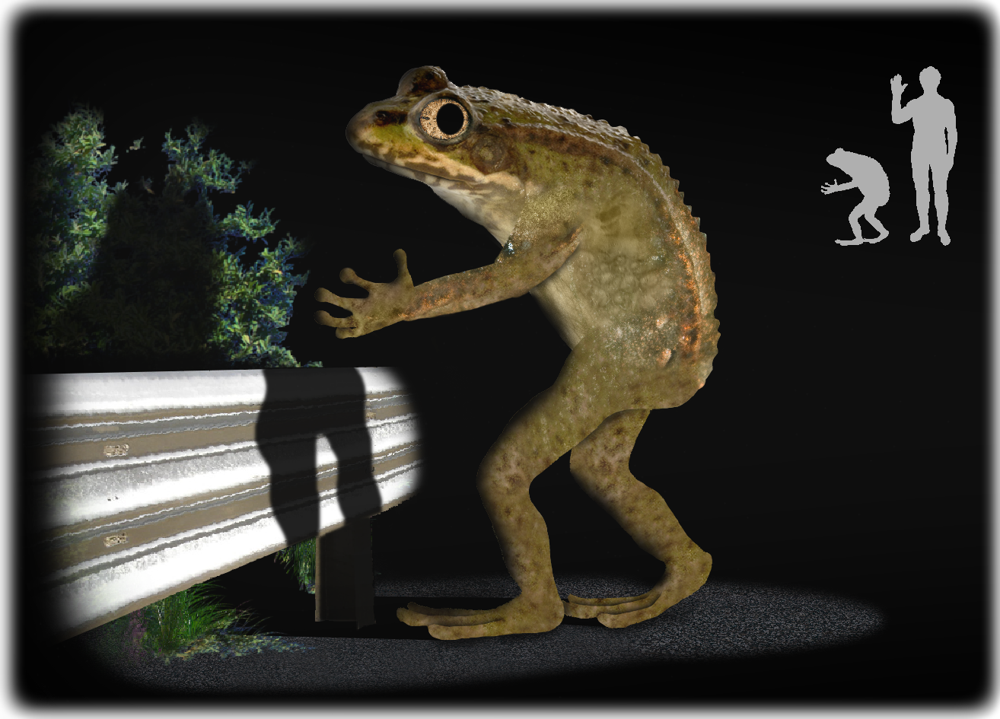

In Ohio folklore, the Loveland frog (also known as the Loveland frogman or Loveland Lizard) is a legendary humanoid frog described as standing roughly 4 feet (1.2 m) tall, allegedly spotted in Loveland, Ohio.
According to various legends, the creature was first sighted by a businessman or a traveling salesman driving along an unnamed road late at night in 1955, with some versions of the story specifying the month of May. In one story, the driver was heading out of the Branch Hill neighborhood when he spotted three figures stood erect on their hind legs along the side of the road, each 3 to 4 feet (0.91 to 1.22 m) in height, with leathery skin and frog faces. In other versions of the story, the creatures were spotted under or over a poorly lit bridge, and one held a wand over its head that fired a spray of sparks.
I ventured to Loveland, Ohio to see if I could find this humanoid frog for myself. I set out on the local roads late at night, in the marshy area of the town, hoping to catch a glimpse of this creature. I took my chances and caught a break on a farm that had no lights. As I walked down the road, I heard this rustling sound. Looking over, my eyes lit on what was not a frog, nor a snake. A giant man. He was tall, maybe ten feet tall. His body was mostly the body of a human, except for the legs, which were those of an enormous frog. Just then I noticed that he had a big frog head, as well. Before I had the chance to think, he leapt at me! I fell to my knees, screaming. He grabbed me and opened his maw, revealing rows of thousands of sharp teeth. With his other hand he scooped up a handful of mud and hurled it at my head. Then he flipped me over and started digging his teeth into my flesh. He seemed enraged that we had caught him, I thought. I tried not to make the mistake of screaming, because I knew that would only add to his anger. So I went completely limp, hoping he would think I was dead, all while trying not not scream. He released me after a bit, pulled me to the side, and hopped away into the darkness as quickly as he had come. I lay whimpering and shaking for what felt like hours until a little after midnight. A pair of headlights crested the hill in the distance. I was saved. The farmer that owned the property helped me into his truck and drove me to the nearest hospital. With such an intense first encounter, you would think I would stop cryptid hunting forever, but it only fueled my desire to find more.